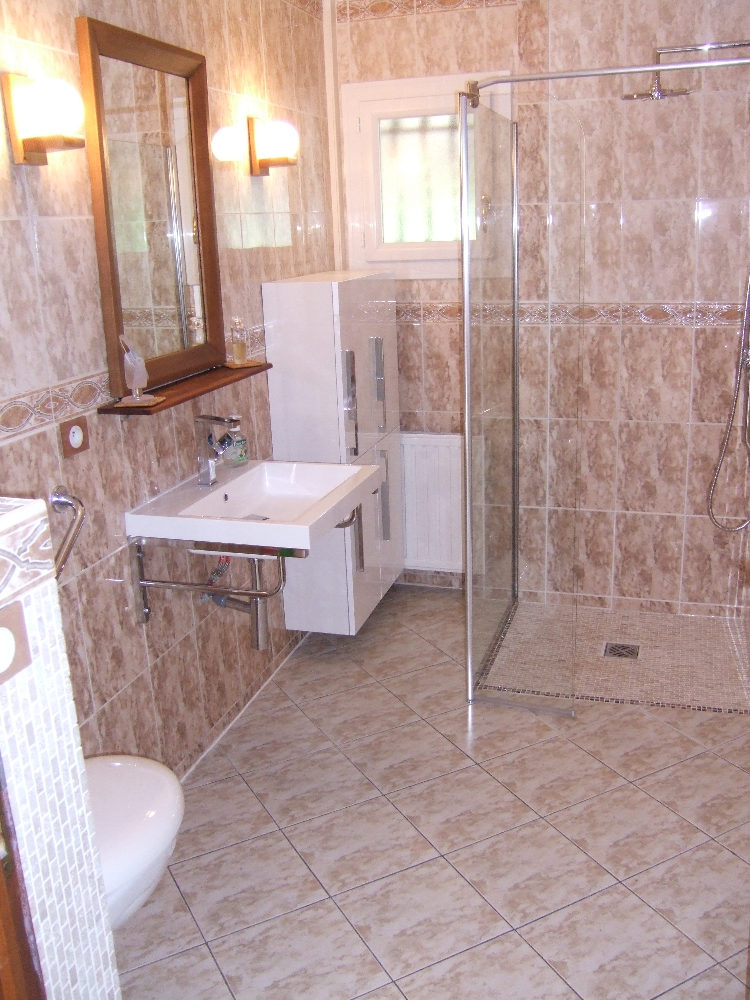

Adapté aux niveaux des soins: Chaque personne a des besoins différents, je les accompagne aux actes d'hygiène, du couchage, je vérifie la bonne prise du traitement médical, je surveille les signes de bonne santé: prise de température, identification des changements dans les comportements de la personne.Je leur prodigue les soins élémentaires, tout en conservant au maximum leur intimité et sais prendre des iniatives en cas d'urgence. J'adapte mon intervention en fonction de la situation de chaque personne.
Le projet de vie de mes accueillis est personnalisé, pour définir les objectifs de prise en charge, en fonction de sa vie passée, de ses goûts, sa capacité d'adaptation, son bilan médical et psychique.Les objectifs principaux de cet accueil vont être de préserver et de maintenir l'autonomie de la personne âgée dépendante ou non, afin de pouvoir lui assurer une qualité de vie et lui permettre de garder une vie sociale.
Un kinésithérapeute, un médecin généraliste, un podologue, une coiffeuse, ils seront là pour assurer les soins spécifiques à chaque besoin et chaque personne.J'organise la coordination des soins.
Chaque personne a une famille, elle est donc libre de venir lui rendre visite, en convenant des plages horaires en fonction des passages des intervanants, de la préparation et de la prise des repas et du besoin de repos de chacun.Lors de ses visites, l'intimité des familles et des accueillis est préservée.Il est également possible de convenir de moments de prise en charge par la famille ou amis.
Chaque repas est un plaisir, il est donc important que l'alimentation sois équilibrée et goûteuse pour qu'elle plaise à chacun,toujours en respectant les régimes alimentaires et les goûts de tous.Ces repas maison sont fait de façon à garder un cadre convivial et chaleureux.
J'assure le ménage, la blanchisserie, les courses comme exemple: les repas et les déplacements à la pharmacie.
Vous pouvez bénéficier des aides suivantes: Aides sociales: L'allocation Personnalisée d'Autonomie (APA) Aide au logement: L'aide Personnalisée au logement (APL) Aide Fiscale: Réduction ou crédit d'impôt pour l'emploi d'un salarié à domicile.
